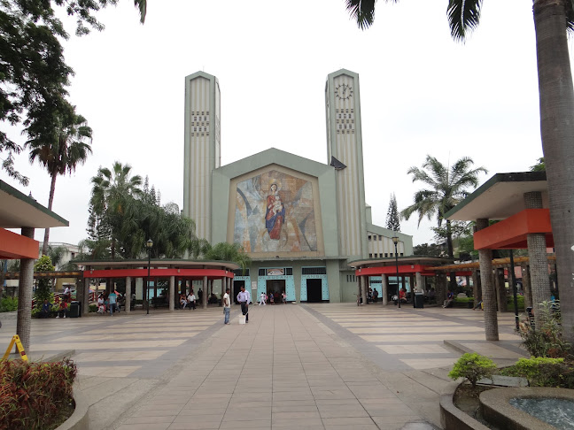
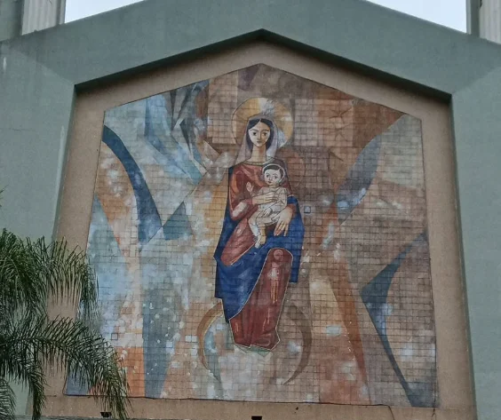

Bienvenido a la catedral de Babahoyo, un lindo sitio el cual visitar, ubicado en el corazon de la ciudad de Babahoyo,
Frente al parque 24 de Mayo, en la calle Bolívar (entre 5 de Junio y 10 de Agosto),
en esta pagina encontrara la historia sobre la catedral, horarios de misa, tramites parroquiales y avisos hacia la comunidad.

Historia de su construccion
La edificación de la actual Catedral de Nuestra Señora de la Merced marcó la modernización arquitectónica del centro de Babahoyo,
levantándose frente al parque 24 de Mayo para reemplazar los antiguos templos de madera de la ciudad y consolidar una sede definitiva para la Iglesia católica en Los Ríos.
Antecedente eclesiástico: Tras la creación del Vicariato Apostólico de Los Ríos en 1948 (que separó a la provincia de la Diócesis de Guayaquil), surgió la necesidad de construir un templo catedralicio moderno acorde a la nueva jurisdicción.
Inicio de la obra (1957): Los trabajos de construcción comenzaron formalmente en 1957 bajo la dirección del contratista César Luna, empleando hormigón armado para crear una estructura mucho más alta y resistente que las edificaciones tradicionales de la época.
Culminación y primera misa (1963): La obra civil tomó seis años en completarse y concluyó en 1963, año en el que se inauguró el templo y se celebró su primera eucaristía.
Bendición oficial (1964): Aunque el templo ya estaba operativo desde 1963, su bendición solemne se llevó a cabo en enero de 1964, consolidándolo como el principal ícono religioso frente al parque central.
Instalación del mural (1969): Seis años después de terminar el edificio, se completó su fachada frontal con la colocación y bendición del gigantesco mural de mosaicos de la Virgen de la Merced, cuyas piezas fueron fabricadas y numeradas en España.
Un punto de encuentro para toda la comunidad
La catedral es un símbolo histórico y espiritual de Los Ríos. Recibimos diariamente a familias del casco urbano y de las parroquias rurales cercanas que buscan un espacio de
oración, acompañamiento y servicio comunitario.

Mural de mosaicos de la Virgen de la Merced.
Servicios parroquiales
La parroquia ofrece los siguientes servicios espirituales y comunitarios durante todo el año:
Celebración diaria de la Santa Misa y confesiones.
Catequesis de Primera Comunión y Confirmación para niños y jóvenes.
Preparación y celebración de bautizos y matrimonios.
Emisión de certificados y partidas (fe de bautismo, confirmación y matrimonio).
Pastoral social y recolección de donaciones para familias vulnerables.
Horarios de misas y atención en secretaría
Te recomendamos llegar 15 minutos antes del inicio de cada celebración,
especialmente los días domingos y feriados.
Horarios habituales de misas y despacho parroquial de la Catedral de Babahoyo
Actividad
Días
Horario
Lugar
Misa matutina
Lunes a sábado
07:00
Nave principal
Misa vespertina
Lunes a sábado
18:30
Nave principal
Misas dominicales
Domingos
07:00, 09:00, 11:00 y 18:30
Nave principal
Despacho parroquial (trámites)
Lunes a viernes
08:30 a 12:30 y 14:30 a 17:30
Secretaría parroquial
Confesiones
Jueves y viernes
17:30 a 18:15
Confesionarios laterales
Cómo solicitar una fe de bautismo
Si necesitas tu partida de bautismo para un matrimonio, confirmación o trámite personal, sigue estos pasos en orden:
Verifica en casa los nombres completos del bautizado y el año aproximado del bautizo.
Acércate al despacho parroquial de lunes a viernes con una copia de la cédula de identidad.
Solicita en ventanilla la búsqueda en el libro de registros parroquiales.
Realiza el aporte correspondiente por emisión de documento certificado.
Retira tu fe de bautismo firmada y sellada, el trámite suele entregarse el mismo día o en 24 horas.
Video de presentación
Breve recorrido informativo sobre la Catedral Nuestra Señora de la Merced.
Aviso parroquial de la semana
Escucha el comunicado breve sobre las inscripciones de catequesis y la jornada solidaria de este mes:
[Inicio del audio] Estimada comunidad de Babahoyo, les informamos que ya están abiertas las
inscripciones para el nuevo ciclo de catequesis de Primera Comunión y Confirmación en la secretaría
de la Catedral Nuestra Señora de la Merced. La atención es de lunes a viernes hasta las 17:30.
Además, este domingo estaremos recibiendo alimentos no perecibles en la entrada principal para nuestra
campaña solidaria mensual. ¡Los esperamos! [Fin del audio]
Ubicación y contacto
Cómo llegar al Parque Central 24 de Mayo
Estamos ubicados en la calle 10 de Agosto, entre 5 de Junio y General Barona, frente al Parque
24 de Mayo, en el centro de Babahoyo, Los Ríos.